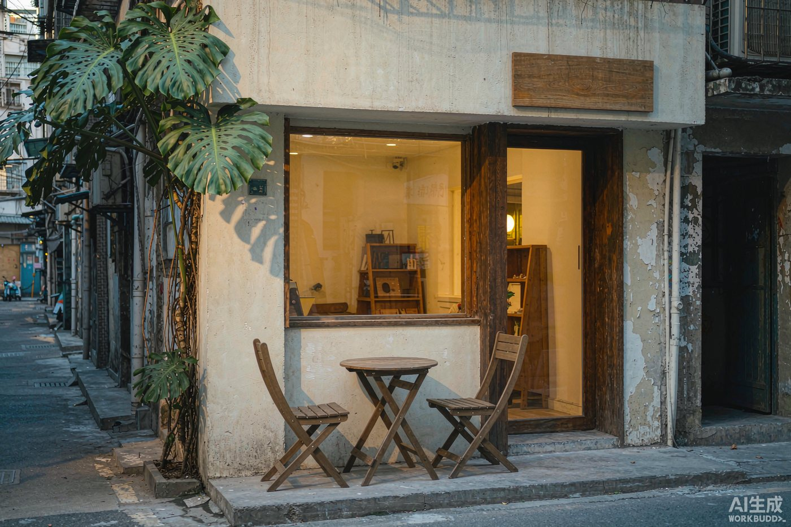
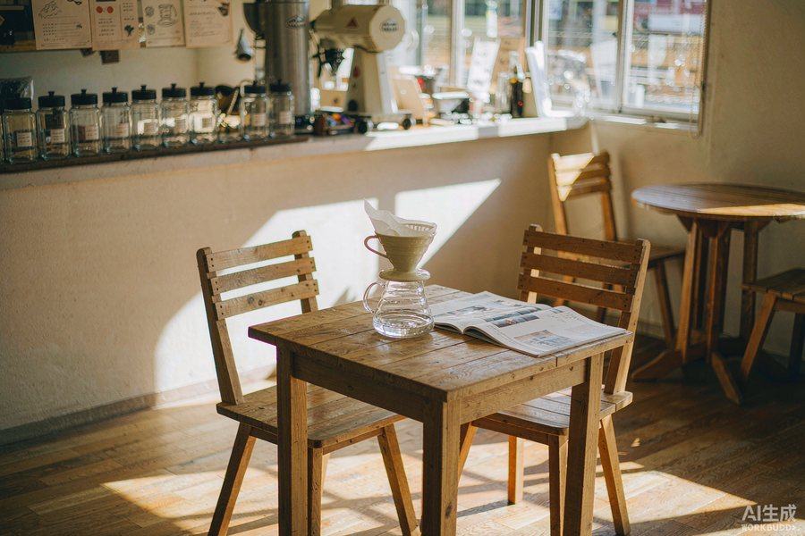
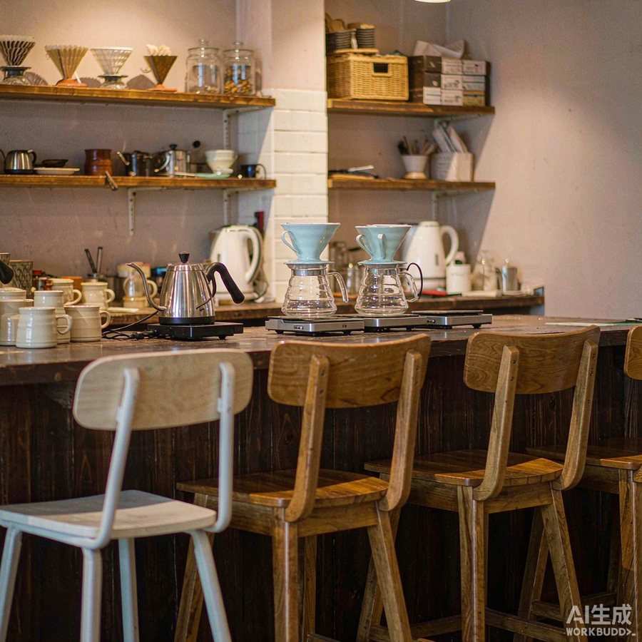
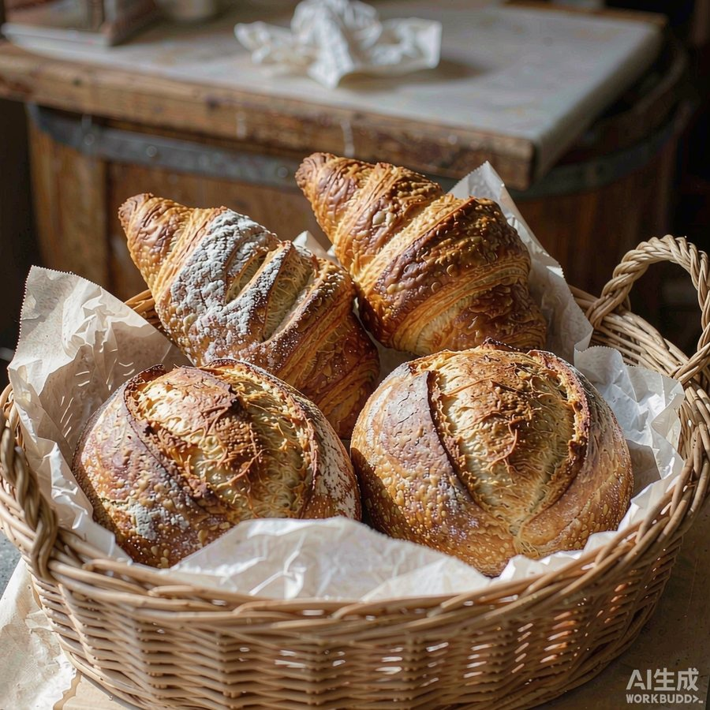
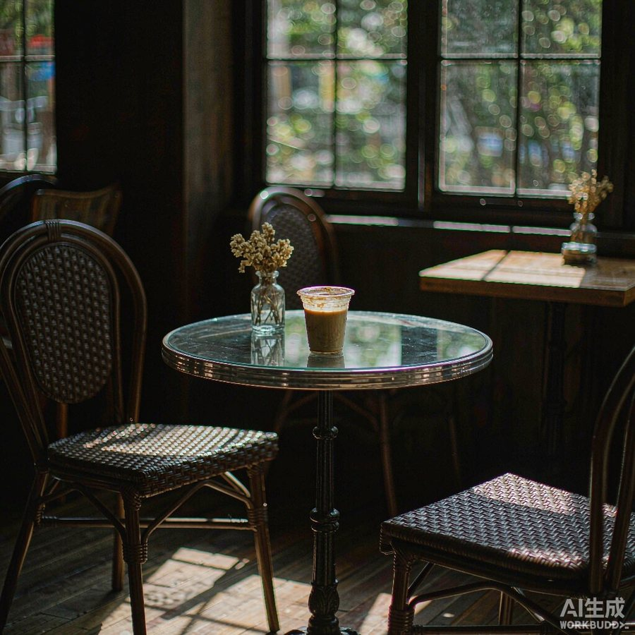
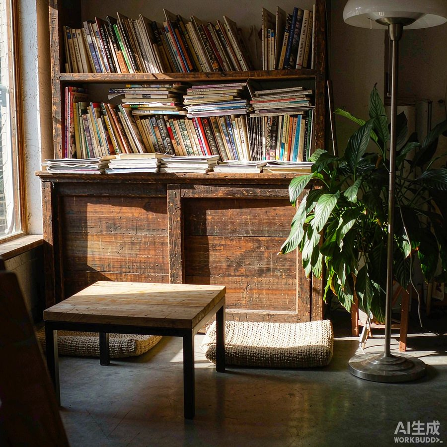
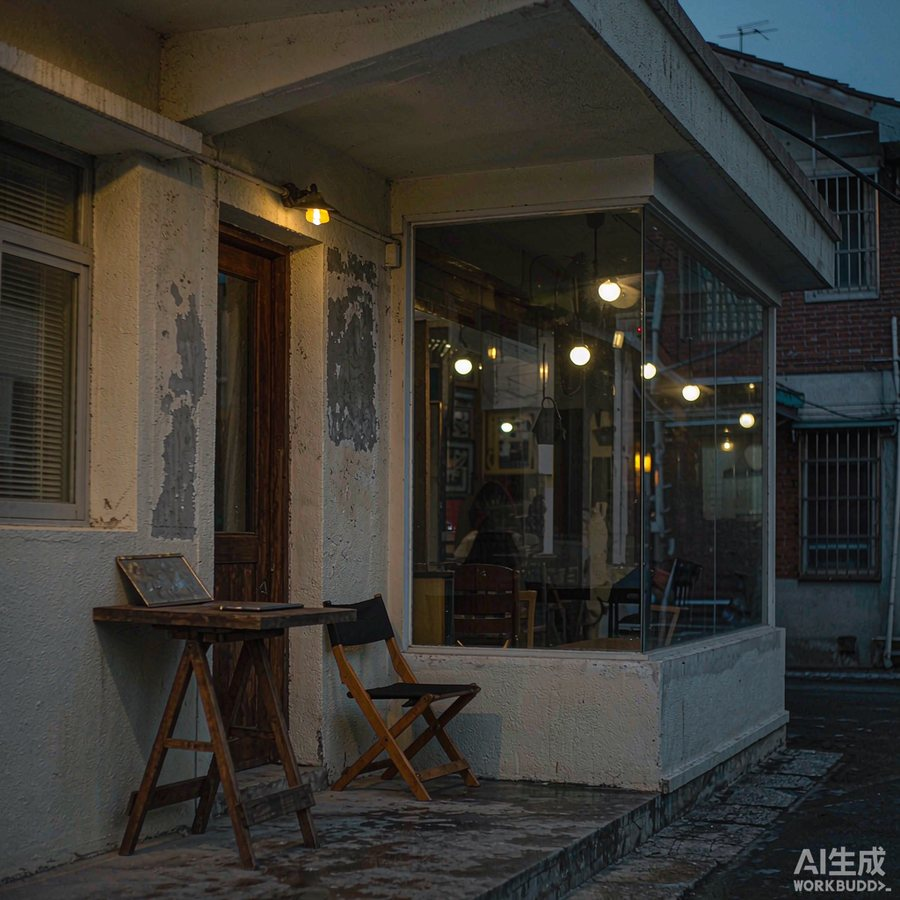

手冲单品
¥28 – 45
豆单写在吧台上，先闻干香再决定。

GALLERY
六个角落：靠窗的桌子、手冲吧台、出炉的面包、下午的光、书架，还有晚上门口那盏灯。

靠窗两张桌子，下午三点有光

吧台五个位子，能看着冲

面包每天烤两炉，卖完为止

四点以后最安静

书架上的书可以拿下来看

晚上门口挂一盏灯
MENU
价格是区间，具体看当天豆单。
¥28 – 45
豆单写在吧台上，先闻干香再决定。
¥32 – 38
提前十二小时滴好，每天一壶。
¥26 – 30
换燕麦奶加3元。
¥12 – 32
上午十点和下午三点各出炉一炉。
¥38 – 58
面包配沙拉或汤，十一点后供应。
¥60 – 120
半磅起，现场磨或不磨都行。
HOURS
周一店休。节假日有调整，会在门口贴一张公告。
FAQ
可以，有插座和Wi-Fi。周末下午人多，坐超过两小时麻烦再点一杯。
巷子里不能停。隔壁小区停车场8元/小时，走过去两分钟。
工作日晚上可以，20人以内，提前三天说。周末不接包场。
可以，半磅起。现场磨或不磨都行，磨的话说一声用什么器具。
HOW TO GET HERE
第一次来按右边四条走，找不到就打电话，店里有人接。